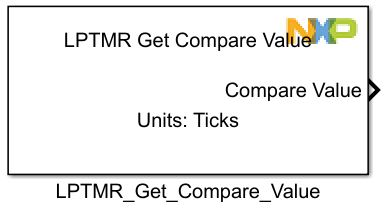
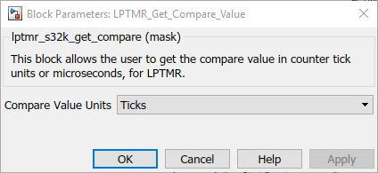

LPTMR Get Compare Value Block
This block allows the user to get the compare value in counter tick units or microseconds, for LPTMR module.
Block Image
Inputs:
- None
Outputs:
- Compare Value
- UINT_16 - for Ticks Value Units
- UINT_32 - for Microseconds Value Units
Parameters and Dialog Box
Compare Value Units
Sets the returned units type: Ticks or Microseconds.
Block Dependency
Block Miscellaneous Details
- None